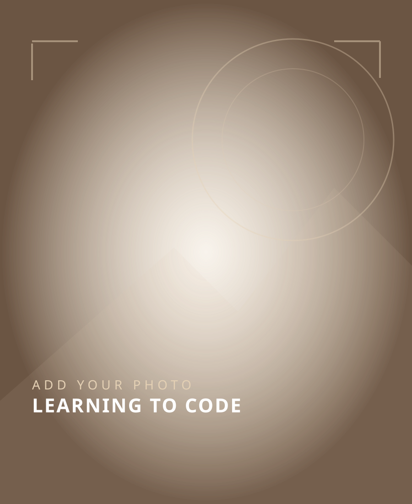
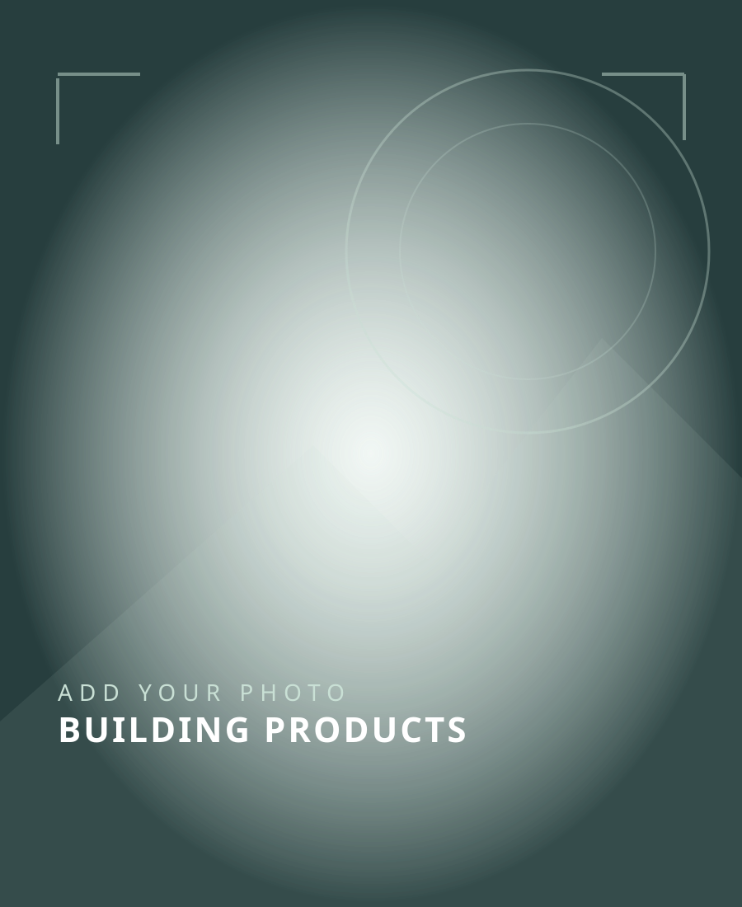

2020.03
高校卒業
福岡県立玄界高等学校を卒業
社会人としての最初の一歩を踏み出しました。
エンジニア / 個人開発者
ゲームが好きだった少年が、技術で人の役に立つものをつくるエンジニアに。販売・学校IT支援・Web開発を経て、今は自分でもサービスを企画し、育てています。

はじめまして
はじめまして、エルノビ ユッセフです。日本で育ち、エジプトにルーツがあります。ゲームを遊ぶことが好きで、「ゲームはどうやって作られているんだろう」という好奇心が、プログラミングを学び始めるきっかけになりました。
高校卒業後は九州各地の家電量販店でauの携帯電話・通信サービスを提案。その後、IT専門学校に通いながら学校のシステム管理を経験しました。現在はWebシステムの開発・運用に携わり、個人でもアプリを企画・開発しています。
02 / MY STORY IN PHOTOS
当時の写真を追加して、仕事・学び・好きなことを自分の言葉で伝える場所にします。写真は後から差し替え可能です。




写真は、公開してよいものを選んで後から追加する予定です。
02 / EXPERIENCE
高校卒業から携帯販売、IT専門学校、学校のIT支援、そしてWebエンジニアへ。遠回りに見える経験も、今の開発スタイルにつながっています。
社会人としての最初の一歩を踏み出しました。
九州各地の家電量販店を巡り、auの携帯電話や通信プランを提案。お客様の悩みを聞いて、自分の言葉で分かりやすく説明する力を学びました。社内の月間販売実績トップ10に複数回入りました。
もともとゲームが好きで「遊んでいるゲームはどうやって動くんだろう？」と考えたのがプログラミングへの入口でした。ITの基礎とWeb開発を学び、2025年3月に卒業しました。
校内のシステム管理やITサポートを担当しました。先生や利用者が日々困っていることに触れ、使う人のために仕組みを整える面白さを知りました。
技術研修を経て4名チームのリーダーとして社内Webアプリケーションを開発。2025年10月からはプロ野球6球団の公式サイト関連システムを担当し、PHP・CakePHP・WordPressによる調査・改修や、本番運用、テストに携わっています。
03 / SELECTED WORK
実務ではチーム開発と本番運用を経験。個人開発では企画から実装まで、自分で手を動かして形にしています。
学校管理・教育コミュニケーション向けSaaS。学校ごとのデータ分離、ロール別の権限管理、出欠・時間割・チャット、Web管理画面・APIなどを開発。
イスラム文化・生活支援・学習の総合アプリ。クルアーン、ハディース、礼拝時間、モスク検索などを、宗教・国籍を問わず利用できる設計で開発。
4名チームのリーダーとして作業分担と進捗確認を担当。社員情報・提出書類・スキル管理などの画面、REST API、DBの実装・検証に参加。
「カモテップ」も個人開発中です。公開できない業務用ソース・顧客情報は掲載していません。個人開発の一部は正式公開前であり、公開状況を明記しています。
04 / TOOLKIT
実務経験と個人開発での経験を分けて紹介しています。
PHP · CakePHP · WordPress · PostgreSQL · Azure · Linux · Docker · Git
React · TypeScript · Java · Spring Boot · REST API · OpenAPI · AWS
Next.js · React Native · Expo · NestJS · Prisma · PostgreSQL · Railway
バックエンドの実装力を深め、要件整理・設計・実装・運用までつなげられるフルスタックエンジニアを目指しています。福岡を拠点に、使う人の声が届くプロダクトを育てていきたいです。
5分の自己紹介を見る06 / CONNECT
面接後にも見返せるように、GitHubとNILE QUESTのQRコードをまとめました。